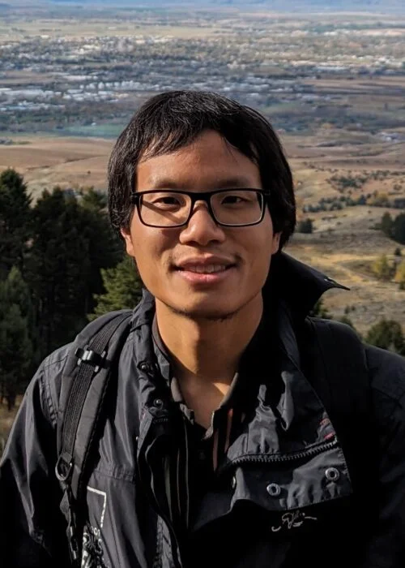

Christopher Kuo Postdoctoral Fellow
I am a postdoc at the Max Planck Institute for Mathematics. Previously, I was a postdoc at the University of Southern California. My Ph.D. advisor was Vivek Shende. I am on the job market for both tenure-track and postdoctoral positions this year. My research interests include microlocal sheaf theory, noncommutative geometry, symplectic geometry, and D-modules. Here is my CV. |
 |
In addition to research writing, I usually prepare expository work when giving a talk, research presentation, or expository talk. You can find these writings in the talks listed below or on the expository page which includes summaries.